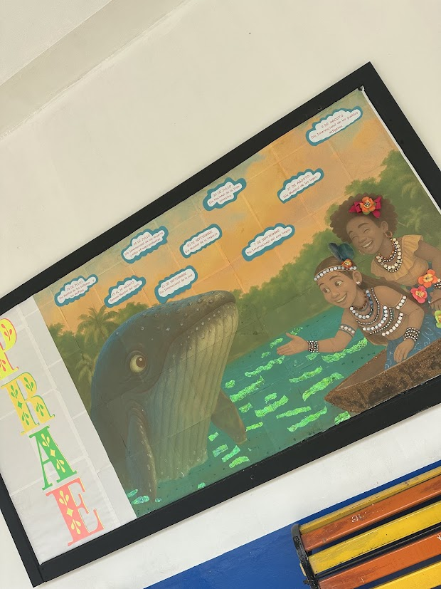

Fortalecer la conciencia ambiental en toda la comunidad educativa de la Institución Educativa San José del Citará, promoviendo prácticas sostenibles que integren el conocimiento científico, el trabajo colaborativo y el respeto por el entorno natural, contribuyendo así al desarrollo de una cultura ambiental responsable y autosostenible.


Durante los últimos dos años, un grupo de estudiantes de la Institución Educativa San José del Citará se convirtieron en protagonista de una experiencia que marcó su formación: su participación en Semillas del Futuro, programa impulsado por la Federación Nacional de Cafeteros.
Como parte del proceso, los jóvenes viajaron a Medellín para capacitarse en catación y barismo, donde aprendieron a identificar la calidad del café, dominar diversos métodos de preparación y perfeccionar el análisis sensorial. La experiencia no solo fortaleció sus habilidades técnicas, sino que despertó en ellos un entusiasmo renovado por la cultura cafetera.
Ahora, estos nuevos embajadores del café están listos para compartir sus conocimientos con otros estudiantes, llevando a la institución el aroma del aprendizaje y sembrando nuevas oportunidades para la comunidad educativa.

Se recolectaron más de 120 kg de material reciclable gracias a la participación activa de toda la comunidad educativa.

Los estudiantes exploraron el mundo de las abejas y aprendieron sobre su importancia para los ecosistemas locales.
Promovemos la agricultura sostenible y el trabajo colaborativo, conectando a los estudiantes con la tierra y la producción limpia de alimentos saludables.

Los estudiantes cultivan hortalizas aplicando técnicas agroecológicas que fortalecen el respeto por el medio ambiente.

La huerta fomenta valores de cooperación y conciencia ambiental en cada jornada de siembra y cosecha.
Transformamos los residuos orgánicos del comedor y la huerta en abono natural, promoviendo el aprovechamiento de los desechos.

El compost generado se utiliza en la huerta, mejorando la fertilidad del suelo y reduciendo residuos.

Usamos lombrices rojas californianas para optimizar la descomposición y crear humus rico en nutrientes.
Rescatamos el valor del café como símbolo de identidad cultural y agrícola, promoviendo su cultivo sostenible.

Los estudiantes conocen las etapas del cultivo del café y aplican prácticas sostenibles.

Exploramos procesos de tostado y empaque escolar como forma de emprendimiento local.
Educamos en la clasificación y reutilización de residuos, fomentando una cultura ecológica escolar.

Los estudiantes aprenden a clasificar materiales mediante actividades lúdicas y creativas.

Con materiales reutilizados elaboran obras y objetos útiles, mostrando que reciclar también es crear.
Elaboramos jabones ecológicos con aceites naturales y aromas del entorno, promoviendo el emprendimiento estudiantil.

Aprendemos a fabricar jabones biodegradables que cuidan la piel y el medio ambiente.

Los productos elaborados se exhiben en ferias escolares, fortaleciendo la autogestión.
Exploraremos el fascinante mundo de las abejas, comprendiendo su papel vital en la polinización y la biodiversidad.

Aprenderemos sobre la importancia de las abejas y los cuidados para mantener su equilibrio ecológico.